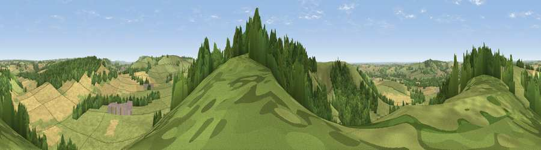

Viewpoint near West Meon
#18292 in England · top 16% of its area beats it · near West Meon · open accessWhere it is
The exact computed spot (SU 64725 21175). Click the marker for map links.
Public access: this spot lies on mapped open-access land (CRoW Act 2000) — you may roam here on foot. Computed from Natural England's CRoW access layer and OpenStreetMap rights of way — not the legal definitive map. Always verify locally.
The view, rendered

A 360° render of this exact spot computed from the terrain model, tree cover and land cover — summer colours, afternoon light, calibrated against photographs of famous viewpoints. Real trees, hedges and buildings will differ in detail.
The panorama
Grey silhouette: terrain skyline in each direction (720 bearings, Earth curvature and refraction included). Dashed green: skyline with trees (+15 m) and buildings (+8 m) as obstacles. Blue strip: how far the ground is visible on each bearing.
Where the view opens
Wedge length = distance to the farthest visible ground on that bearing (vegetation-aware). Rings at 10, 25 and 50 km.
What fills the view
47% grassland · 30% woodland · 21% cropland · 1% built-up
Angular shares of the visible panorama (visual magnitude), not map area. Landscape diversity 0.47 (0–1 Shannon).
Key numbers
More beautiful places nearby
The staircase of upgrades: each row has a higher view potential than everything closer. Driving times are estimates from straight-line distance, calibrated against real road routing — check an actual route before setting out.
| Place | Direction | Drive | Score |
|---|---|---|---|
| Viewpoint near Meonstoke | SW · 1 km | ~3 min | 74.8 |
| Viewpoint near Buriton | E · 7 km | ~14 min | 75.3 |
| Viewpoint near Buriton | E · 7 km | ~15 min | 80.0 |
| Beacon Hill | E · 16 km | ~29 min | 85.8 |
| Viewpoint near Upper Bonchurch | S · 43 km | ~63 min | 86.4 |
| Mottistone Down | SW · 44 km | ~64 min | 87.2 |
| Viewpoint near St. Lawrence | SSW · 45 km | ~65 min | 88.2 |
| Viewpoint near Niton | SSW · 48 km | ~68 min | 89.2 |
50.98635, -1.07926 · source: screening · position refined by local search. Computed location — check access rights before visiting.